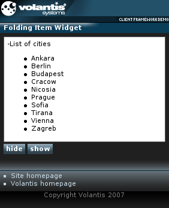

The Folding Item widget can be used to include hidden content that is displayed when the user selects an action. This content may be downloaded with the initial page, or the download may be deferred until the item is opened - improving page rendering performance. Refer to Folding Item widget for further information.
In this module you will add your first references to JavaScript methods that show or hide the content.

<style type="text/css" media="handheld,all">
.folding {
mcs-effect-style: none;
mcs-effect-duration: 5s;
}
.folding:mcs-concealed {
mcs-effect-style: none;
mcs-effect-duration: 5s;
}
</style>
<widget:folding-item id="myFoldingItem">
<widget:summary>List of cities</widget:summary>
<widget:detail>
<ul>
<li><a href="http://www.ankara-bel.gov.tr">Ankara</a></li>
<li><a href="http://www.berlin.de">Berlin</a></li>
<li><a href="http://www.budapest.hu">Budapest</a></li>
<li><a href="http://www.krakow.pl">Cracow</a></li>
<li><a href="http://www.nicosia.org.cy">Nicosia</a></li>
<li><a href="http://www.prague-city.cz">Prague</a></li>
<li><a href="http://www.sofia.bg">Sofia</a></li>
<li><a href="http://www.tirana.gov.al">Tirana</a></li>
<li><a href="http://www.wien.gv.at/">Vienna</a></li>
<li><a href="http://www.zagreb.hr">Zagreb</a></li>
</ul>
</widget:detail>
</widget:folding-item>
#myFoldingItem::marker {
content : mariner-component-url('/images/folded.mimg');
float: right;
}
#myFoldingItem:mcs-unfolded::marker {
content : mariner-component-url('/images/unfolded.mimg');
float: right;
}
<widget:script id="fold">$W('myFoldingItem').fold()</widget:script>
<widget:script id="unfold">$W('myFoldingItem').unfold()</widget:script><div class="buttons"> <widget:button action="fold#invoke">hide</widget:button> <widget:button action="unfold#invoke">show</widget:button> </div>
Verify that your code the foldingitem.xdime file matches the following example.
<?xml version="1.0" encoding="UTF-8"?>
<html xmlns="http://www.w3.org/2002/06/xhtml2"
xmlns:event="http://www.w3.org/2001/xml-events"
xmlns:mcs="http://www.volantis.com/xmlns/2006/01/xdime/mcs"
xmlns:template="http://www.volantis.com/xmlns/marlin-template"
xmlns:widget="http://www.volantis.com/xmlns/2006/05/widget">
<head>
<title>Folding Item Widget</title>
<link rel="mcs:theme" href="/themes/main.mthm"/>
<link rel="mcs:layout" href="/layouts/main.mlyt"/>
<style type="text/css" media="handheld,all">
.folding {
mcs-effect-style: none;
mcs-effect-duration: 5s;
}
.folding:mcs-concealed {
mcs-effect-style: none;
mcs-effect-duration: 5s;
}
</style>
<widget:script id="fold">$W('myFoldingItem').fold()</widget:script>
<widget:script id="unfold">$W('myFoldingItem').unfold()</widget:script>
</head>
<body>
<template:apply href="templates/demo-main.xdtpl">
<template:binding name="title" value="Folding Item Widget"/>
<template:binding name="content">
<template:complexValue>
<widget:folding-item id="myFoldingItem" class="widget folding">
<widget:summary>List of cities</widget:summary>
<widget:detail>
<ul>
<li><a href="http://www.ankara-bel.gov.tr">Ankara</a></li>
<li><a href="http://www.berlin.de">Berlin</a></li>
<li><a href="http://www.budapest.hu">Budapest</a></li>
<li><a href="http://www.krakow.pl">Cracow</a></li>
<li><a href="http://www.nicosia.org.cy">Nicosia</a></li>
<li><a href="http://www.prague-city.cz">Prague</a></li>
<li><a href="http://www.sofia.bg">Sofia</a></li>
<li><a href="http://www.tirana.gov.al">Tirana</a></li>
<li><a href="http://www.wien.gv.at/">Vienna</a></li>
<li><a href="http://www.zagreb.hr">Zagreb</a></li>
</ul>
</widget:detail>
</widget:folding-item>
<div class="buttons">
<widget:button action="fold#invoke">hide</widget:button>
<widget:button action="unfold#invoke">show</widget:button>
</div>
</template:complexValue>
</template:binding>
</template:apply>
</body>
</html>| Name | Purpose |
|---|---|
| a | Used to create an explicit link to another place in the same document or to another document. The current document is the source of the link and the value of the href attribute, defines the link target |
| div | A section used to add extra structure to documents. Style sheets can be used to control the presentation. |
| li | A list item in an ordered, unordered or navigation list. |
| ul | A list of unordered items. |
| widget:button | A general purpose element, used by widgets which need a button-like control. |
| widget:detail | Specifies the content of the widget that is initially hidden. It is made visible when the widget:summary content is clicked. May contain XDIME 2 block elements in addition to nested folding items. |
| widget:folding-item | Outer container for a Folding Item widget that displays a summary of its contents, and when activated, reveals more detailed content. |
| widget:script | Contains a script that can be executed by the invoke action. |
| widget:summary | Defines the visible title, label or thumbnail for content that is initially hidden. Clicking on the element content makes the widget:detail visible. |
| Core attributes | Attributes that are common to XDIME 2 elements. |
| Hypertext attributes | Attributes that define link targets. |